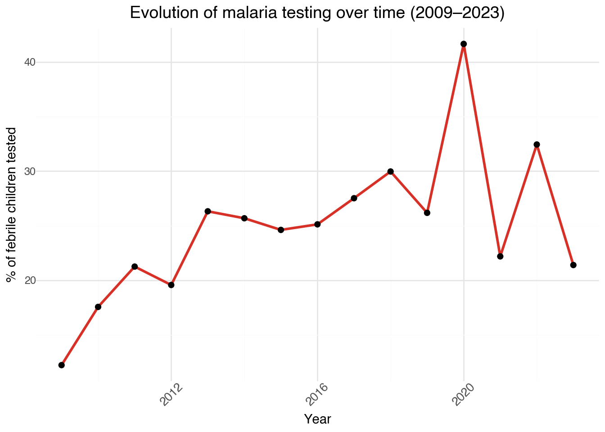
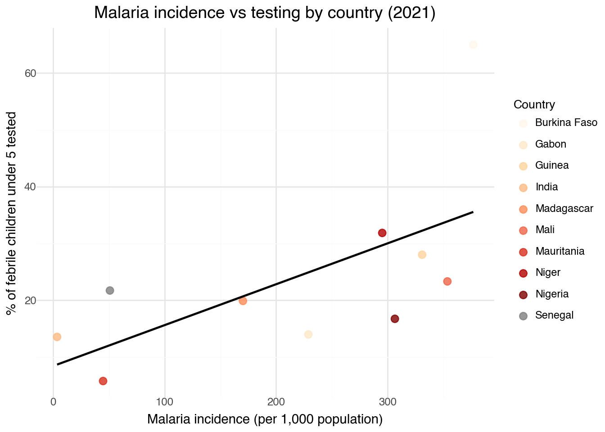

Despite being both preventable and treatable, malaria remains one of the leading causes of death among young children worldwide. In 2022 alone, over 600,000 malaria deaths were reported globally, most of them in sub-Saharan Africa.
Early and accurate diagnosis is critical: it enables timely treatment, reduces transmission, and saves lives. Yet, access to malaria testing remains deeply uneven, particularly in low-income, rural, or conflict-affected areas.
Introduction
Millions of children develop fever symptoms every year, but in many parts of the world, they’re not even tested. This report analyzes the global landscape of malaria diagnostics, uncovering invisible barriers that silently put lives at risk.
Drawing on UNICEF Indicator 1: “Percentage of febrile children under age 5 who had a finger or heel stick for malaria testing”, this analysis covers multiple countries from 2009 to 2023.
Through a combination of visualisations and narrative, the following sections explore testing trends, reveal disparities in diagnostic access, and assess how testing efforts match the burden of malaria.
Key stats
👶 2 out of 3 febrile children under 5 do not receive a malaria test.
🌍 Malaria caused 600,000+ deaths in 2022 with children in Sub-Saharan Africa being the most affected.
🩺 Testing rates range from under 10% to over 60% This reflects major inequalities in healthcare access.
Geographic Distribution of Malaria Testing (2021)
📌
import plotly.graph_objects as goimport pandas as pddf_map = pd.read_csv("unicef_indicator_1.csv")df_2021 = df_map[ (df_map["indicator"] =="Malaria diagnostics - percentage of febrile children (under age 5) who had a finger or heel stick for malaria testing") & (df_map["time_period"] ==2021)]fig = go.Figure(data=go.Choropleth( locations = df_2021['country'], locationmode ='country names', z = df_2021['obs_value'], colorscale ='Reds', colorbar_title ='% Tested', marker_line_color='white', zmin=10, zmax=70))fig.update_layout( title_text='Geographic Distribution of Malaria Testing (2021)', geo=dict( showframe=False, showcoastlines=False, projection_type='equirectangular', lataxis_range=[-35, 40], lonaxis_range=[-25, 110] ), margin=dict(l=20, r=20, t=60, b=20))fig.show()
The world map provides a geographical overview of the percentage of febrile children under 5 who received a malaria test in each country, based on data from the year 2021.
It highlights substantial geographic disparities in test coverage: West and Central Africa countries report the highest testing rates, often exceeding 60%, reflecting that malaria remains a major public health issue. In contrast, South Asia, particularly India, shows a testing rate below 15%, despite its large population and high malaria burden. Southeast Asia and parts of East Africa appear to be underrepresented or missing, largely due to unavailability rather than absence of malaria risk.
Selecting 2021 as the reference year aligns with UNICEF’s most recent complete dataset and allows for direct comparison with disease incidence levels and COVID-19 impacts.
This visualization highlights both the presence and the gaps in malaria testing coverage across regions, revealing massive disparities in data availability and healthcare access.
Source: UNICEF & WHO data
Evolution of malaria testing over time (2009–2023)
Beyond geography, it’s important to understand how testing rates have evolved over time.
📌
import polars as plimport pandas as pdfrom plotnine import*df = pl.read_csv("unicef_indicator_1.csv")df_clean = df.select(["country", "indicator", "time_period", "obs_value"])media_annuale = ( df_clean .group_by("time_period") .agg(pl.col("obs_value").mean().alias("avg_tested")) .sort("time_period") .to_pandas())( ggplot(media_annuale, aes(x="time_period", y="avg_tested")) + geom_line(color="#d73027", size=1.2) + geom_point(color="black", size=2) + labs( title="Evolution of malaria testing over time (2009–2023)", x="Year", y="% of febrile children tested" ) + theme_minimal() + theme( axis_text_x=element_text(rotation=45, size=10), plot_title=element_text(size=14, weight='bold') ))

This chart shows the evolution of malaria testing among febrile children under 5 from 2009 to 2023, based on available country data.
The trend reveals an overall upward trend: from around 20% in 2009 to nearly 28.7% in 2023. The spike in 2020 (over 41%) likely reflects intensified healthcare efforts during the COVID-19 pandemic.
However, the progress appears to have slowed, with values fluctuating and even declining in some years. This suggests that gains achieved during the pandemic may not have been sustained, especially in regions with weaker healthcare infrastructure.
Source: UNICEF & WHO data
Regional comparison of malaria testing rates (2009-2023)
Looking at the boroader picture, regional averages offer valuable insgiht into where testing access is strongest, and where critical gaps persist.
This bar chart compares malaria testing coverage across different regions between 2009 and 2023.
East and West Africa stand out with the highest average malaria testing rates, reflecting stronger diagnostic programs and a higher disease burden
South Asia and Southeast Asia, despite the malaria risk, show much lower testing coverage, suggesting persistent healthcare access challenges.
This regional gap highlights the central role of healthcare infrastructure and funding. African regions often receive more malaria-specific support, while testing access in parts of Asia remains limited despite high disease burden.
While the previous bar chart highlighted regional differences in average testing rates, this multi-panel line chart tracks how malaria testing rates have evolved over time across each major region.
East and West Africa show consistent improvement across the years, suggesting a positive response to global health initiatives.
South Asia and Southeast Asia display less consistent progress, with relatively flat or fluctuating trends, possibly reflecting persistent barriers to diagnostic access, particularly in rural or underserved communities.
While each region follows its own pattern, the overall insight is clear: some areas are progressing rapidly, while others require further investment and support.
Note:Some regional lines end before the final available year due to limited data availability in recent years. This reflects the challenges of data collection in regions with weaker infrastructure or political instability.
Source: UNICEF & WHO data
Which country led in malaria testing from 2019 to 2023?
After observing the overall trend, it is essential to zoom in and understand which countries are leading the response.
The following chart shows the top 10 countries with the highest average percentage of febrile children under age 5 who were tested for malaria between 2019 and 2023.
This helps to call attention to where diagnostic access is strongest, and which healthcare systems are more capable of responding to early symptoms.
Burkina Faso and Zambia stand out with coverage above 60%, showcasing stronger diagnostic efforts. Many of the top performer are located in West and Central Africa, reflecting both the regional burden and targeted healthcare interventions.
This visualization illustrates the areas where malaria testing has been more widely implemented, whether due to greater need, stronger healthacre caapcity, or sustained external support, all of which play a crucial role in improving outcomes for at-risk poppulations.
Source: UNICEF & WHO data
Correlation between malaria incidence and testing rates (2021)
The scatter plot below explores the potential relationship between disease burden and diagnostic access, providing insights into whether higher malaria incidence leads to larger testing coverage. The analysis is based on the available data for 10 countries in 2021 that report both malaria incidence and diagnostic coverage.
📌
import warningswarnings.filterwarnings('ignore')import polars as plimport pandas as pdfrom plotnine import*df_merged = pl.read_csv("merged_unicef_1_&_incidence_of_malaria.csv")df_scatter = ( df_merged .filter(pl.col("time_period") ==2021) .select(["country", "obs_value_malaria_testing", "malaria_incidence"]) .drop_nulls() .to_pandas())( ggplot(df_scatter, aes(x="malaria_incidence", y="obs_value_malaria_testing", color="country")) + geom_point(size=3, alpha=0.8) + geom_smooth(method="lm", color="black", se=False) + scale_color_brewer(type='seq', palette='OrRd') + labs( title="Malaria incidence vs testing by country (2021)", x="Malaria incidence (per 1,000 population)", y="% of febrile children under 5 tested", color="Country" ) + theme_minimal() + theme( plot_title=element_text(size=14, weight='bold'), axis_text_x=element_text(size=9), axis_text_y=element_text(size=9), legend_position="right", legend_title=element_text(size=10) ))

The graph shows a weak but positive correlation.
Burkina Faso stands out with a high malaria incidence and the highest testing rate (over 65%).
On the other hand, countries such as Nigeria and Mauritania present high incidence but relatively low testing rates, suggesting gaps in healthcare accessibility.
India, despite its large population and significant malaria burden, shows low diagnostic coverage, confirming challenges in reaching remote populations with adequate healthcare services.
The trend line suggests that while higher malaria incidence may encourage greater testing, this is not universally true:several high-incidence countries still lag behind in diagnostic coverage.
This indicate that other factors, such as healthcare infrastructure, funding, or political will, may strongly influence testing access beyond disease burden alone.
Source: UNICEF & WHO data
Key takeaways
Some regions, particularly South and Southeast Asia, still struggle to achieve adequate levels of testing coverage, while other areas, such as West and East Africa, exhibit stronger levels.
Malaria incidence and testing are positively correlated, yet many high-burden nations are still not testing sufficiently.
Research indicates that when political will, infrastructure, and investment are in alignment, progress becomes possible.
What can be done
The data is clear: despite advancements in certain areas, millions of children continue to be denied access to a simple test that might save their lives. In order to bridge this gap, coordinated actions must be taken:
Equip frontline health workers with rapid diagnostic kits and continuous training
Monitor and share testing coverage data by district to identify underserved zones
Streamline access to malaria testing to improve diagnosis rates and outcomes
Conclusion
This report has brought attention to a critical, yet frequently overlooked, stage in the fight against malaria: testing febrile children under five. Some countries are making strong progress, but in the vast majority of regions febrile children are still not being tested.
The reason may vary; it could be distance, cost, lack of supplies, or training. However, we are aware of what the numbers indicate: access to testing is not equal, and that’s something we can change. Behind every percentage point lies a child, a family, and a chance to take prompt action.
In the fight against malaria, access to testing must become universal. No child should be left without diagnosis, because every test can save a life.
Support efforts that bring diagnostics to the frontlines and push for equity in healthcare.
---title: "<span class='main-title'>UNICEF REPORT</span><br><span class='subtitle-neutral'>The Unequal Fight Against Malaria Testing: are all febrile children tested?</span>"author: "Camilla Saleri"date: 25 April 2025format: html: toc: true theme: cosmo css: styles.css code-fold: true code-summary: "📌" code-tools: true code-overflow: scroll embed-resources: false fig-align: center number-sections: false smooth-scroll: truelang: en---## Background: Why malaria testing mattersDespite being both preventable and treatable, malaria remains one of the leading causes of death among young children worldwide. In 2022 alone, over 600,000 malaria deaths were reported globally, most of them in sub-Saharan Africa. Early and accurate diagnosis is **critical**: <span class="highlight">it enables timely treatment, reduces transmission, and saves lives</span>. Yet, access to malaria testing remains deeply **uneven**, particularly in low-income, rural, or conflict-affected areas.## Introduction<div class="intro-box">Millions of children develop fever symptoms every year, but in many parts of the world, they’re not even tested. This report analyzes the global landscape of malaria diagnostics, uncovering <strong>invisible barriers that silently put lives at risk</strong>.</div>Drawing on UNICEF Indicator 1: **_“Percentage of febrile children under age 5 who had a finger or heel stick for malaria testing”_**, this analysis covers multiple countries from 2009 to 2023.Through a combination of visualisations and narrative, the following sections _explore testing trends, reveal disparities in diagnostic access, and assess how testing efforts match the burden of malaria_.---<img src="https://www.unicef.org/sites/default/files/styles/hero_extended/public/UN0320581.JPG.webp?itok=Qq_LXiG9"width="600px" height="350px" style="border: 4px solid #a50f15; border-radius: 16px; box-shadow: 0px 4px 10px rgba(0,0,0,0.2); margin: 2em auto; display: block; object-fit: cover;"/>---## <span class="section-title">Key stats</span><div class="card p-3 bg-light shadow-sm mb-3"><strong>👶 2 out of 3 febrile children under 5</strong><br> do not receive a malaria test.</div><div class="card p-3 bg-light shadow-sm mb-3"><strong>🌍 Malaria caused 600,000+ deaths in 2022</strong><br> with children in Sub-Saharan Africa being the most affected.</div><div class="card p-3 bg-light shadow-sm mb-3"><strong>🩺 Testing rates range from under 10% to over 60%</strong><br> This reflects major inequalities in healthcare access.</div>## Geographic Distribution of Malaria Testing (2021)```{python}import plotly.graph_objects as goimport pandas as pddf_map = pd.read_csv("unicef_indicator_1.csv")df_2021 = df_map[ (df_map["indicator"] =="Malaria diagnostics - percentage of febrile children (under age 5) who had a finger or heel stick for malaria testing") & (df_map["time_period"] ==2021)]fig = go.Figure(data=go.Choropleth( locations = df_2021['country'], locationmode ='country names', z = df_2021['obs_value'], colorscale ='Reds', colorbar_title ='% Tested', marker_line_color='white', zmin=10, zmax=70))fig.update_layout( title_text='Geographic Distribution of Malaria Testing (2021)', geo=dict( showframe=False, showcoastlines=False, projection_type='equirectangular', lataxis_range=[-35, 40], lonaxis_range=[-25, 110] ), margin=dict(l=20, r=20, t=60, b=20))fig.show()```---The world map provides a geographical overview of the _percentage of febrile children under 5 who received a malaria test_ in each country, based on data from the year **2021**. It highlights substantial geographic disparities in test coverage: **West and Central Africa countries** report the highest testing rates, often **exceeding 60%**, reflecting that malaria remains a major public health issue.In contrast, **South Asia**, particularly India, shows a testing rate **below 15%**, despite its large population and high malaria burden.**Southeast Asia and parts of East Africa** appear to be underrepresented or missing, largely due to unavailability rather than absence of malaria risk._Selecting 2021 as the reference year aligns with UNICEF's most recent complete dataset and allows for direct comparison with disease incidence levels and COVID-19 impacts._>_This visualization highlights both <span class="highlight">the presence and the gaps in malaria testing coverage across regions, revealing massive disparities in data availability and healthcare access</span>._<span class="source">Source: UNICEF & WHO data</span>## Evolution of malaria testing over time (2009–2023)Beyond geography, it's important to understand how testing rates have evolved over time.```{python}import polars as plimport pandas as pdfrom plotnine import*df = pl.read_csv("unicef_indicator_1.csv")df_clean = df.select(["country", "indicator", "time_period", "obs_value"])media_annuale = ( df_clean .group_by("time_period") .agg(pl.col("obs_value").mean().alias("avg_tested")) .sort("time_period") .to_pandas())( ggplot(media_annuale, aes(x="time_period", y="avg_tested")) + geom_line(color="#d73027", size=1.2) + geom_point(color="black", size=2) + labs( title="Evolution of malaria testing over time (2009–2023)", x="Year", y="% of febrile children tested" ) + theme_minimal() + theme( axis_text_x=element_text(rotation=45, size=10), plot_title=element_text(size=14, weight='bold') ))```---This chart shows the **evolution of malaria testing among febrile children under 5 from 2009 to 2023**, based on available country data.The trend reveals an **overall upward trend**: <span class="highlight">from around **20% in 2009** to nearly **28.7% in 2023**. The spike in **2020** (**over 41%**) likely reflects intensified healthcare efforts during the COVID-19 pandemic</span>.However, the **progress appears to have slowed**, with values **_fluctuating and even declining_** in some years. This suggests that gains achieved during the pandemic may not have been sustained, especially in regions with **weaker healthcare infrastructure**.<span class="source">Source: UNICEF & WHO data</span>## Regional comparison of malaria testing rates (2009-2023)Looking at the boroader picture, **regional averages** offer valuable insgiht into where testing access is strongest, and where critical gaps persist.```{python}import polars as plimport pandas as pdfrom plotnine import*df = pl.read_csv("unicef_indicator_1.csv")region_map = {"Afghanistan": "South Asia", "India": "South Asia", "Nepal": "South Asia", "Tajikistan": "South Asia","Angola": "Central Africa", "Cameroon": "Central Africa", "Central African Republic": "Central Africa","Chad": "Central Africa", "Congo": "Central Africa", "Congo, the Democratic Republic of the": "Central Africa","Equatorial Guinea": "Central Africa", "Gabon": "Central Africa", "Guyana": "Central Africa","Sao Tome and Principe": "Central Africa", "Benin": "West Africa", "Burkina Faso": "West Africa","Gambia": "West Africa", "Ghana": "West Africa", "Guinea": "West Africa", "Guinea-Bissau": "West Africa","Ivory Coast": "West Africa", "Liberia": "West Africa", "Mali": "West Africa", "Mauritania": "West Africa","Niger": "West Africa", "Nigeria": "West Africa", "Senegal": "West Africa", "Sierra Leone": "West Africa","Togo": "West Africa", "Burundi": "East Africa", "Comoros": "East Africa", "Ethiopia": "East Africa","Kenya": "East Africa", "Madagascar": "East Africa", "Malawi": "East Africa", "Mozambique": "East Africa","Rwanda": "East Africa", "South Sudan": "East Africa", "Swaziland": "East Africa","Tanzania, United Republic of": "East Africa", "Uganda": "East Africa", "Zambia": "East Africa","Zimbabwe": "East Africa", "Haiti": "Middle East & Central America", "Honduras": "Middle East & Central America","Namibia": "Middle East & Central America", "Sudan": "Middle East & Central America","Suriname": "Middle East & Central America", "Yemen": "Middle East & Central America","Lao People's Democratic Republic": "Southeast Asia", "Myanmar": "Southeast Asia","Papua New Guinea": "Southeast Asia", "Solomon Islands": "Southeast Asia","Timor-Leste": "Southeast Asia", "Vietnam": "Southeast Asia"}df_clean_pd = df.select(["country", "indicator", "time_period", "obs_value"]).to_pandas()df_clean_pd["region"] = df_clean_pd["country"].map(region_map)df_clean = pl.from_pandas(df_clean_pd)region_mean = ( df_clean .group_by("region") .agg(pl.col("obs_value").mean().alias("avg_tested")) .sort("avg_tested", descending=True) .to_pandas())( ggplot(region_mean, aes(x="reorder(region, -avg_tested)", y="avg_tested", fill="avg_tested")) + geom_col() + scale_fill_gradient(low="#fee5d9", high="#a50f15") + labs( title="Average Malaria Testing by Region (2009–2023)", x="Region", y="Average % of febrile children tested", fill="% Tested" ) + theme_minimal() + theme( plot_title=element_text(size=14, weight='bold', ha='center'), axis_text_x=element_text(rotation=30, size=9) ))```---This bar chart compares **malaria testing coverage across different regions between 2009 and 2023**.- **East and West Africa** stand out with the **highest average malaria testing rates**, reflecting stronger diagnostic programs and a higher disease burden- **South Asia and Southeast Asia**, despite the malaria risk, show **much lower testing coverage**, suggesting persistent healthcare access challenges.This regional gap highlights the <span class="highlight">**central role of healthcare infrastructure and funding**</span>. African regions often receive more malaria-specific support, while testing access in parts of Asia remains limited despite high disease burden.<span class="source">Source: UNICEF & WHO data</span>## Malaria testing trends by region (2009-2023)```{python}import polars as plimport pandas as pdfrom plotnine import*df = pl.read_csv("unicef_indicator_1.csv")region_map = {"Afghanistan": "South Asia", "India": "South Asia", "Nepal": "South Asia", "Tajikistan": "South Asia","Angola": "Central Africa", "Cameroon": "Central Africa", "Central African Republic": "Central Africa","Chad": "Central Africa", "Congo": "Central Africa", "Congo, the Democratic Republic of the": "Central Africa","Equatorial Guinea": "Central Africa", "Gabon": "Central Africa", "Guyana": "Central Africa","Sao Tome and Principe": "Central Africa", "Benin": "West Africa", "Burkina Faso": "West Africa","Gambia": "West Africa", "Ghana": "West Africa", "Guinea": "West Africa", "Guinea-Bissau": "West Africa","Ivory Coast": "West Africa", "Liberia": "West Africa", "Mali": "West Africa", "Mauritania": "West Africa","Niger": "West Africa", "Nigeria": "West Africa", "Senegal": "West Africa", "Sierra Leone": "West Africa","Togo": "West Africa", "Burundi": "East Africa", "Comoros": "East Africa", "Ethiopia": "East Africa","Kenya": "East Africa", "Madagascar": "East Africa", "Malawi": "East Africa", "Mozambique": "East Africa","Rwanda": "East Africa", "South Sudan": "East Africa", "Swaziland": "East Africa","Tanzania, United Republic of": "East Africa", "Uganda": "East Africa", "Zambia": "East Africa","Zimbabwe": "East Africa", "Haiti": "Middle East & Central America", "Honduras": "Middle East & Central America","Namibia": "Middle East & Central America", "Sudan": "Middle East & Central America","Suriname": "Middle East & Central America", "Yemen": "Middle East & Central America","Lao People's Democratic Republic": "Southeast Asia", "Myanmar": "Southeast Asia","Papua New Guinea": "Southeast Asia", "Solomon Islands": "Southeast Asia","Timor-Leste": "Southeast Asia", "Vietnam": "Southeast Asia"}df_clean = df.select(["country", "indicator", "time_period", "obs_value"]).to_pandas()df_clean["region"] = df_clean["country"].map(region_map)df_clean = df_clean.dropna(subset=["region"])region_yearly = ( df_clean .groupby(["time_period", "region"], as_index=False) .agg(avg_tested=("obs_value", "mean")))( ggplot(region_yearly, aes(x="time_period", y="avg_tested")) + geom_line(color="#d73027", size=1.1) + geom_point(color="#99000d", size=2) + facet_wrap("~region", ncol=2, scales="free_y") + labs( title="Malaria testing trends by region (2009-2023)", x="Year", y="% of febrile children tested", caption="Separate panel per region. Scales are free." ) + theme_minimal() + theme( plot_title=element_text(size=14, weight='bold', ha='center'), axis_text_x=element_text(rotation=45, size=9), strip_text=element_text(weight='bold') ))```---While the previous bar chart highlighted regional differences in average testing rates, this multi-panel line chart tracks _**how** malaria testing rates **have evolved over time** across each major region_.- **East and West Africa** show consistent improvement across the years, suggesting a **positive response** to global health initiatives.- **South Asia and Southeast Asia** display **less consistent progress**, with relatively flat or fluctuating trends, possibly reflecting **_persistent barriers to diagnostic access_**, particularly in rural or underserved communities.While each region follows its own pattern, the overall insight is clear: <span class="highlight">some areas are progressing rapidly, while others require further investment and support</span>.> Note:_Some regional lines end before the final available year due to limited data availability in recent years. This reflects the **challenges of data collection in regions with weaker infrastructure or political instability**._<span class="source">Source: UNICEF & WHO data</span>## Which country led in malaria testing from 2019 to 2023?After observing the overall trend, it is essential to zoom in and understand **which countries are leading the response**. The following chart shows the _**top 10 countries** with the highest average percentage of febrile children under age 5 who were tested for malaria between **2019 and 2023**._This helps to <span class="highlight">call attention to where **diagnostic access is strongest**, and which healthcare systems are more capable of responding to early symptoms</span>.```{python}import polars as plimport pandas as pdfrom plotnine import*df = pl.read_csv("unicef_indicator_1.csv")df_recent = ( df .filter(pl.col("time_period").is_between(2019, 2023)))df_top_countries = ( df_recent .group_by("country") .agg(pl.col("obs_value").mean().alias("avg_tested")) .filter(pl.col("country").is_in(["Burkina Faso", "Zambia", "Malawi", "Mozambique","Tanzania, United Republic of", "Liberia", "Rwanda","Ivory Coast", "Ghana", "Guinea-Bissau" ])) .to_pandas())( ggplot(df_top_countries, aes(x="reorder(country, -avg_tested)", y="avg_tested", fill="avg_tested")) + geom_col() + scale_fill_gradient(low="#fee5d9", high="#a50f15") + labs( title="Top 10 Countries for Malaria Testing (2019–2023)", x="Country", y="% of febrile children tested", fill="% Tested" ) + theme_minimal() + theme( plot_title=element_text(size=14, weight='bold', ha='center'), axis_text_x=element_text(rotation=45, size=9) ))```---**Burkina Faso** and **Zambia** stand out with coverage **above 60%**, showcasing stronger diagnostic efforts. Many of the top performer are located in **West and Central Africa**, reflecting both the regional burden and targeted healthcare interventions.This visualization illustrates the areas where malaria testing has been more widely implemented, whether due to **greater need, stronger healthacre caapcity, or sustained external support**, all of which play a crucial role in improving outcomes for at-risk poppulations.<span class="source">Source: UNICEF & WHO data</span>## Correlation between malaria incidence and testing rates (2021)The scatter plot below explores the potential relationship between disease burden and diagnostic access, providing insights into whether <span class="highlight">higher malaria incidence leads to larger testing coverage</span>. _The analysis is based on the available data for 10 countries in 2021 that report both malaria incidence and diagnostic coverage._```{python}import warningswarnings.filterwarnings('ignore')import polars as plimport pandas as pdfrom plotnine import*df_merged = pl.read_csv("merged_unicef_1_&_incidence_of_malaria.csv")df_scatter = ( df_merged .filter(pl.col("time_period") ==2021) .select(["country", "obs_value_malaria_testing", "malaria_incidence"]) .drop_nulls() .to_pandas())( ggplot(df_scatter, aes(x="malaria_incidence", y="obs_value_malaria_testing", color="country")) + geom_point(size=3, alpha=0.8) + geom_smooth(method="lm", color="black", se=False) + scale_color_brewer(type='seq', palette='OrRd') + labs( title="Malaria incidence vs testing by country (2021)", x="Malaria incidence (per 1,000 population)", y="% of febrile children under 5 tested", color="Country" ) + theme_minimal() + theme( plot_title=element_text(size=14, weight='bold'), axis_text_x=element_text(size=9), axis_text_y=element_text(size=9), legend_position="right", legend_title=element_text(size=10) ))```---The graph shows a **weak but positive correlation**. - **Burkina Faso** stands out with a high malaria incidence and the highest testing rate (**over 65%**).- On the other hand, countries such as **Nigeria and Mauritania** present high incidence but relatively low testing rates, suggesting gaps in healthcare accessibility.- **India**, despite its large population and significant malaria burden, shows low diagnostic coverage, confirming challenges in reaching remote populations with adequate healthcare services.The **trend line** suggests that while _higher malaria incidence may encourage greater testing, this is not universally true:_ **several high-incidence countries still lag behind in diagnostic coverage**.This indicate that other factors, such as <span class="highlight">**healthcare infrastructure, funding, or political will**, may strongly influence testing access beyond disease burden alone</span>.<span class="source">Source: UNICEF & WHO data</span>## <span class="section-title">Key takeaways</span><div class="card p-3 bg-light shadow-sm mb-3"> Some regions, particularly **South and Southeast Asia**, still struggle to achieve adequate levels of testing coverage, while other areas, such as **West and East Africa**, exhibit stronger levels.</div><div class="card p-3 bg-light shadow-sm mb-3"> Malaria incidence and testing are positively correlated, yet many high-burden nations are <strong> still not</strong> testing sufficiently.</div><div class="card p-3 bg-light shadow-sm mb-3"> Research indicates that when political will, infrastructure, and investment are in alignment, progress becomes <strong>possible</strong>.</div>## <span class="section-title">What can be done</span>The data is clear: despite advancements in certain areas, millions of children continue to be denied access to a simple test that might save their lives. In order to **bridge this gap**, coordinated actions must be taken: - **Equip frontline health workers** with rapid diagnostic kits and continuous training - **Monitor and share testing coverage data** by district to identify underserved zones - **Streamline access** to malaria testing to improve diagnosis rates and outcomes## ConclusionThis report has brought attention to a critical, _yet frequently overlooked_, stage in the fight against malaria: testing febrile children under five. Some countries are making strong progress, but in the <span class="highlight">vast majority of regions febrile children are still not being tested</span>. The reason may vary; it could be _distance, cost, lack of supplies, or training_. However, we are aware of what the numbers indicate: **access to testing is not equal, and that’s something we can change**. Behind every percentage point lies a child, a family, and a chance to take prompt action.<div class="highlight-box">In the fight against malaria, <strong>access to testing must become universal</strong>. No child should be left without diagnosis, because every test can save a life.</div><div style="text-align:center; margin: 2em 0;"><img src="https://mg.co.za/wp-content/uploads/2020/07/dfc92930-unicef-logo.png" width="160" style="margin: 0 20px;"/></div>Support efforts that bring **diagnostics to the frontlines** and push for **equity in healthcare**.<p style="text-align:center; margin-top:2em;"><a href="https://act.unfoundation.org/a/contribute-worldwide-partnership-defeat-aids-tuberculosis-and-malaria/" style="background-color:#d73027; color:white; padding:12px 24px; border-radius:8px; text-decoration:none; font-weight:bold; font-size:1.1rem;"> ✊ Make a difference</a></p>